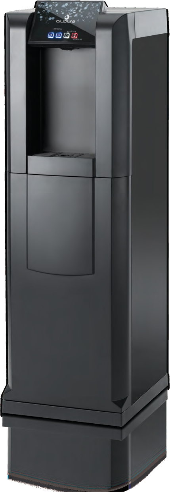

arrow_back_ios_new
home
ITA
ENG
Depuratore d'acqua

counter_1
1. Come erogare l'acqua
local_drink
Posiziona bicchiere o borraccia
touch_app
Premi il comando desiderato
water_drop
2. Scegli il tipo di acqua
ac_unit
Acqua fredda
thermostat
Acqua a temperatura ambiente
bubble_chart
Acqua gassata
local_cafe
Acqua calda
lightbulb
3. Consigli pratici
straighten
Bottiglie e borracce
coffee
Per l'acqua calda
cleaning_services
Lascia pulita la zona di erogazione
warning
4. Attenzione
water_damage
Vaschetta raccogligocce
do_not_touch
Non aprire la macchina
support_agent
5. Se qualcosa non funziona
error
La macchina non eroga o segnala un'anomalia
arrow_back_ios_new
Torna alle istruzioni